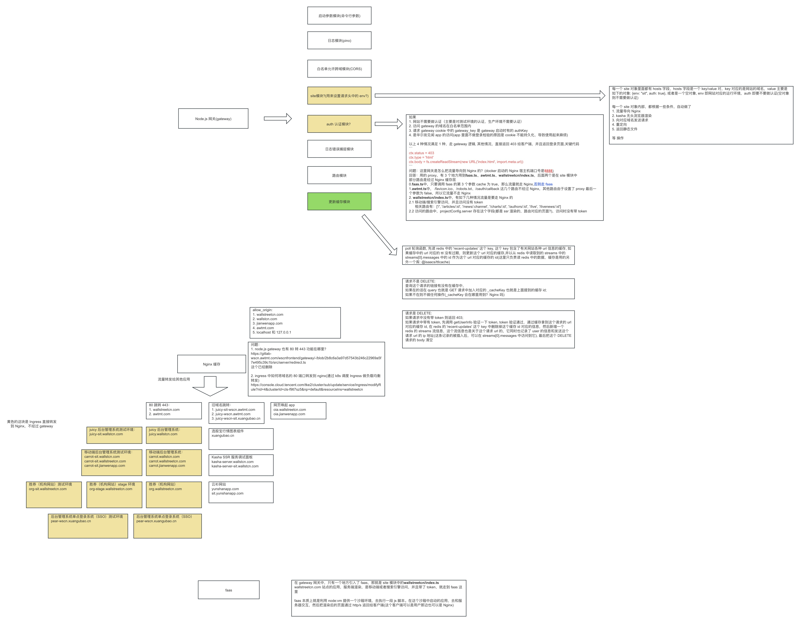

注: 本文是对已经部署在生产环境应用下的基于 gateway 的三层架构复盘解析
太长不看版

目录
- 项目定位：
gateway到底在做什么 - 整体架构图
- 结合
nginx/default.conf看第二层代理 - 启动时，服务做了什么
- 一次请求是怎么走完整条链路的
- 主站
wallstreetcn的分发逻辑 - 几个核心模块，分别负责什么
- 另外几个站点怎么处理
- 配置与环境命名是怎么串起来的
cosup、faas、faas-config和这个项目是什么关系- 这套架构为什么会长成这样
- 回头看这套架构
项目定位：gateway 到底在做什么
先说结论，gateway 放在整套系统里看，就是三层后端网关架构里的第一层入口。
它站在浏览器请求和真正内容服务之间，先按域名识别站点，再按 URL 判断这次请求该走哪条链路，然后把流量转发到后续的 nginx、静态资源、SSR 服务或者 FaaS。除此之外，这一层还顺手把跨域、鉴权、缓存更新、日志和错误兜底这些通用能力兜住了。
如果只盯着代码里的 proxy()、faas()、serveStatic()，会觉得这层什么都沾一点。但把部署关系放回来看，它做的其实是一件更收敛的事：先把请求判断清楚，再把流量送到后面真正产出内容的层里。
整体架构图
先看一张手绘版的主干图：
Browser / App / Bot |
图里最容易看漏的一点是：gateway 本身不是内容层，它就是第一层有业务判断能力的转发入口。
真正的静态资源读取、SSR 渲染和函数执行，更多发生在后面的 nginx、对象存储和 FaaS 运行时里。
结合 nginx/default.conf 看第二层代理
这部分如果不把 nginx/default.conf 放进来，整条链路其实是缺一截的。单看 gateway 代码，会误以为第一层已经把很多事情做完了；把 nginx 配置接上以后，第二层真正承接的职责才会完整露出来。
这份配置里，nginx 干的主要是两类事情。一类是做通用的缓存代理层，代替 gateway 去访问真正的上游；另一类是给一部分固定域名直接做代理，或者直接回源静态资源，不再经过复杂的业务分发。
第一类：通用的 /http 代理层
先看配置开头这段：
map $request_uri $upstream { |
这段做的事很直接，就是把请求路径本身当成目标地址，再由 nginx 往外发。
例如 gateway 想访问某个上游 URL 时，并不一定自己直连，而是会把目标 URL 拼到缓存代理地址后面。对应到 src/lib/request.ts，它默认会把请求改写成：
cacheProxyUrl + 原始目标 URL |
这样一来，请求会先到 nginx 的 /http，再由 nginx 继续 proxy_pass 到真正的上游。
这样拆有两个很实际的好处。一个是 gateway 自己不用承担缓存代理细节，统一交给 nginx 处理；另一个是 nginx 可以基于 x-cache-prefix + upstream 生成缓存 key，把不同设备、不同函数入口、不同降级策略对应的内容隔离缓存。
从配置上看，这层 nginx 还打开了一整套代理缓存能力，包括：
proxy_cacheproxy_cache_background_updateproxy_cache_use_staleproxy_cache_lockproxy_cache_revalidate
所以这里的 nginx 不是纯转发，它确实在扮演第二层缓存代理。
第二类：专门域名的直连代理或静态回源
default.conf 里还有不少 server_name 配置，它们不是给通用代理 /http 用的，而是给具体域名单独定行为。
差不多能分成几类。
1. 直接回源到 COS 静态资源
这类站点非常多，比如：
juicy.wallstcn.comjuicy-sit.wallstcn.comcarrot.wallstcn.comcarrot-sit.wallstcn.compear-wscn.xuangubao.cnpear-wscn-sit.xuangubao.cnoia.wallstreetcn.com
这些域名的 location / 基本都是直接 proxy_pass 到 COS 上的某个 index.html，例如：
location / { |
说白了，这类配置就是 nginx 直接把对象存储里的静态站点挂出来。
2. 根据设备类型选择不同静态站点
像 org.wallstreetcn.com、org-sit.wallstreetcn.com、org-stage.wallstreetcn.com 这几组域名，会根据 User-Agent 先判断桌面端还是移动端，然后再决定回源哪个静态目录：
- 桌面端走
org-pc - 移动端走
org-mobile - 不同环境再通过
@sit、@stage区分
也就是说，第二层 nginx 自己也会做一部分轻量路由，不是所有设备判断都压在 gateway 这一层。
3. 直接代理到 k8s 内部服务
配置里也有一部分域名不是去 COS，而是直接进集群服务，例如：
kasha-server.wallstcn.com代理到kasha-server.default.svc.cluster.localyunshanapp.com根据桌面端/移动端分别代理到yunshan.default.svc.cluster.local和yunshan-mobile.default.svc.cluster.local
从这类配置也能看出来，nginx 不只是静态资源入口，它还包了一层 k8s 内部服务的外部代理。
4. 做跳转和兼容入口
配置里还有一些明显属于入口治理的规则，例如：
www.wallstreetcn.com跳转到https://wallstreetcn.comwww.awtmt.com跳转到https://awtmt.com- 一些旧域名跳到新域名
cors.wallstcn.com这类域名用于跨域下载第三方资源
这些规则放在一起看，nginx 这一层除了缓存和代理，还顺手把一部分历史兼容和域名治理接住了。
把 gateway 和 nginx 放在一起看
把两边代码连起来看，链路就比较顺了。gateway 先识别 host、path、环境和项目配置；一旦决定走代理链路，通常会通过 request() 或 proxy() 把请求送到 nginx 一侧。nginx 再决定是去上游服务、COS 静态资源，还是 k8s 中的服务。要是继续进入 FaaS，那么 FaaS 运行时会再从对象存储拿函数代码或者 SSR 资源，在 Node VM 里执行渲染，最后结果再沿着 nginx -> gateway -> 客户端这条方向返回。
把两层放在一起看会更顺一些：gateway 先做业务判断，nginx 再把这条路真正铺下去，包括缓存、代理和一部分静态站点直出。这样分层以后，第一层不需要背太重的网络细节，第二层也不用理解太多业务语义。
启动时，服务做了什么
项目入口在 src/server/index.ts，事情不多，但都是主干上的东西：创建一个 Koa 应用，把统一中间件链串起来，然后监听端口开始接请求。
最核心的启动代码可以浓缩成这样：
app |
这几层中间件的顺序很重要，因为它直接决定了“请求先被谁处理，后被谁处理”。
除了 Koa 启动本身，项目里还有两个“导入即初始化”的动作。一个在 src/lib/faas.ts，启动时会从对象存储里拉取 faas*.json 配置，并且每 60 秒刷新一次；另一个在 src/server/updateCache.ts，启动时会连接 Redis，持续消费 recent-updates 这个 stream，用来维护本地的缓存失效信息。
这也是为什么这层虽然叫网关，但又不是一个特别“薄”的网关。它表面上主要做转发，实际上还是维护了一部分运行时状态，不然很多动态分发和缓存治理根本立不住。
一次请求是怎么走完整条链路的
第一步：进入 Koa 中间件链
一个请求进来以后，会先过公共层。compress 负责压缩响应内容，caught 负责记录请求日志并把抛出的异常转换成统一错误响应，cors 则处理跨域请求，必要时直接返回 204。
这三层都比较标准，真正开始体现业务判断的是后面几层。
第二步：根据域名选择站点
site 中间件会根据 ctx.hostname 找到当前请求属于哪个站点。
这个设计很朴素，但很实用：同一个网关进程可以同时服务多个站点，每个站点各自有 hosts 配置和路由表。
当前项目里主要有四类站点：wallstreetcn、awtmt、oia 和 polyfill。
一旦匹配成功，ctx.state.site 就被写入上下文，后续所有逻辑都基于这个站点继续分发。
同时，site 中间件还会生成一个 ctx.state.env() 辅助函数，用来把 sit、stage、preview 这种环境信息拼接到项目名、资源路径和配置 key 里。
第三步：做访问控制
auth 中间件只对配置里声明了 auth: true 的 host 生效。
放行条件其实就那几种：要么当前 host 根本不需要鉴权，要么请求来源在白名单域名里，要么 Cookie 里的 gateway_key 命中了配置项 authKeys，再不然就是请求本身来自华尔街见闻 App。
只要四个条件里命中一个，请求就继续往下走；否则直接返回一个 403 页面。
所以 gateway 不只是对外流量入口，也顺带把测试环境、预发环境的入口保护做了。
第四步：处理缓存失效
updateCache 这个模块很容易一眼带过，但它其实挺关键。
它做的事情其实不多。如果收到 DELETE 请求，就把这个 URL 的“失效事件”写进 Redis stream；如果收到普通请求，就看这个 URL 最近有没有失效记录，有的话就自动给查询参数追加 _cacheKey。
这里的做法不是直接跑去清理上游缓存，而是改写请求参数，让后面的缓存系统自然命中一个新的 key。
效果上看，这并不是强行删除旧缓存，而是让后续请求切换到新的缓存版本。
第五步：进入具体站点路由
到了 route 中间件，请求就正式交给具体站点的路由器了：
const middleware: Middleware = (ctx, next) => |
这一步很轻，但它意味着前面的所有公共处理，最终都会收束到某个 site router 上。
后面的逻辑，核心就变成一句话：
这个 URL，到底应该由谁来返回内容？
如果放到整套部署架构里，这句话也可以换成：
这个 URL，应该先被转发到哪一层，再由哪一个后端模块继续处理。
主站 wallstreetcn 的分发逻辑
src/sites/wallstreetcn/index.ts 基本就是主站分发逻辑最集中的地方。这个文件看完，差不多就能知道这套网关为什么会越长越像一个“流量调度层”，而不是单纯的反向代理。
按职责拆开看，大概能分成三层。
第一层：显式路由优先
像首页、文章页、快讯页、作者页、下载页、法律页、OAuth 回调页这些，都先用显式路由单独拦出来。
这么拆开以后，好处也很直接。业务关键路径会更稳定，这些页面可以有各自独立的处理策略，也不会一股脑掉进最后的 catch-all 把逻辑搅在一起。
例如：
/oauth/callback走 OAuth 回调处理。/download走下载逻辑。/robots.txt、/sitemap直接交给 Kasha。- 一些旧页面路径交给
serveLegacy()。
第二层：主站页面按设备和场景分流
主站里有个很重要的判断函数叫 newSiteSwitch()。
它背后的想法其实不复杂。某些页面在移动端更适合走 FaaS，机器人流量也更适合走 FaaS；桌面端的普通流量，大多数时候则交给 Kasha SSR。
说得直接一点，这就是一个“按设备和访问者类型挑后端”的开关。
这背后体现的是一个现实问题：同样是页面请求，给移动端、给搜索引擎爬虫、给桌面浏览器，最合适的返回链路可能并不一样。
第三层：最后的 catch-all 做通用分发
真正的主干逻辑在最后那个 (.*) 路由里。
它大致是下面这个判断顺序：
1. 先从 URL 第一段里取 projectName |
这段逻辑能看出，这个网关并不是把页面路由全部写死了，而是留了一套相对动态的项目接入方式。
某个项目只要在配置中心里挂上：
{ |
配置一挂上去，gateway 就能识别这个项目，然后决定它该走静态资源、FaaS，还是两者混合。
这种写法的好处很直接，接新项目的时候，不需要总去碰主路由；代价也很明确，项目命名、配置结构和对象存储里的布局要长期保持一致。
几个核心模块，分别负责什么
前面的链路按请求顺序走了一遍，这里再换个角度，拆开看几个关键模块各自把哪块复杂度接住了。
src/server/index.ts：总装配入口
它负责把所有中间件串起来，就是请求生命周期真正开始的地方。
src/server/site.ts：按域名选站点
它解决的问题是：同一个网关进程，如何服务多个域名、多套站点逻辑。
这个模块本身不复杂，但它是整个多站点设计成立的前提。
src/server/auth/index.ts：环境保护
它不是常见的用户登录鉴权，更像站点入口的准入控制。
它主要保护的是 sit、stage、preview 之类的环境域名，防止这些环境被无关用户直接访问。
src/server/updateCache.ts：缓存失效广播
这个模块很有平台侧的写法，因为它解决的已经不是单个请求怎么处理，而是多实例下缓存怎么一起失效。
它用 Redis stream 把“哪些 URL 最近被更新过”同步给网关实例，然后通过附加 _cacheKey 的方式，让后续请求自动避开旧缓存。
这个思路比“每层缓存都主动去删”更轻，也更适合分布式场景。
src/lib/serveStatic.ts：统一静态资源读取
它负责从 publicStorageUrl 指向的对象存储里拉取资源，并且在进程内做 TTL 缓存。
这里有个细节挺有意思：
- 带
version参数的资源，缓存时间按正常 TTL 走。 - 不带
version参数的资源，只缓存 1 分钟。
这里的思路很明确：带版本号的资源适合长缓存，不带版本号的资源变化风险更高。
这是一个很常见也很实用的前端静态资源策略。
src/lib/faas.ts：函数配置加载 + 函数执行入口
这个模块主要干两件事：一是从 COS 里读取 faas*.json 项目配置，并定时刷新；二是提供统一的 FaaS 调用入口。
里面还有一个很关键的分支。如果允许缓存，就不直接执行函数，而是代理到 FaaS 服务地址，并带上 x-function-url 和 x-cache-prefix；如果不允许缓存，就直接调用 @wscn/faas 执行函数。
所以它不只是“把函数跑起来”这么简单，中间还夹着一层缓存策略选择。
放回整套部署关系里，这一层就是在决定怎么把请求送进 FaaS 链路。gateway 先根据配置判断该打到哪个函数入口，再把请求交给后面的 FaaS 服务。FaaS 自己跑在 k8s 里，本身就是一个基于 Node VM 的运行时。它会按函数地址去对象存储拿 SSR 资源或者 server bundle，跑完渲染以后，再把结果沿着上游链路送回来。
src/middleware/kasha.ts：SSR 服务代理层
Kasha 在这里就是另一个内容生产方，做的是 SSR。
gateway 调 Kasha 时，会额外带上几类信息：kasha-profile 用来告诉对方当前要按 mobile 还是 desktop 渲染，kasha-fallback 用来表达是否允许降级，x-cache-prefix 则帮助上游缓存区分不同变体。
所以它也不是普通转发，而是一个带业务语义的代理层。
src/lib/request.ts / src/lib/proxy.ts：统一代理出口
这两个模块分工很清楚。request.ts 负责真的发 HTTP 请求，proxy.ts 负责把 Koa 上下文和外部请求、响应桥接起来。
而且 request.ts 默认会走 cacheProxyUrl，说明这个项目天然把“上游缓存代理”当作整个架构的一部分，而不是可有可无的附属能力。
从部署层次看，proxy() 这一层就是 gateway 把流量送到后面 nginx 或代理层的主要出口。后面到底是 nginx 回源静态文件、继续代理到别的服务，还是再转到 k8s 里的 FaaS，就已经是第二层和第三层的事了。
把响应路径也补上会更完整：gateway 先把请求送到 nginx 一侧，nginx 再去静态资源或 FaaS 运行时拿结果；结果出来以后，再沿着反方向一层层返回，最后送回客户端。
另外几个站点怎么处理
虽然主站最复杂，但另外三个站点也能帮助理解这个网关的设计边界。
awtmt
awtmt 这边的逻辑明显更轻。静态文件走对象存储，移动端直接返回静态 index.html，其他流量则代理到 tmt.default.svc.cluster.local。
这一点挺能说明问题：同样一个入口，不同站点后面接的后端模型可以完全不一样。
oia
oia 更像一个下载落地页或者导流站点。静态资源直接返回；在微信里会跳应用宝，iOS 会跳 App Store，其他情况就返回站点首页。
这种站点几乎没有复杂 SSR，但仍然受益于统一的域名接入和资源托管方式。
polyfill
polyfill 基本就是一层定制化代理。
它会根据 User-Agent 归一化出浏览器标识，再把这个标识放进请求头和缓存前缀里，目的是让 polyfill 结果更容易被缓存、复用。
这里也能看出来，网关不只是分页面，它还会顺手把协议和缓存语义补完整。
配置与环境命名是怎么串起来的
这个项目有个很明显的平台化特征：很多东西都没硬写在路由里，而是靠命名约定和配置文件串起来。
例如环境辅助函数 env() 的行为大概是：
- 生产环境默认不加后缀。
sit、stage、preview会被拼进项目 key 或路径里。
所以你会在代码里看到很多这样的形式：
wscn/wallstreetcn.comwscn_sit/downloadivanka-mobile@sit/index.htmlfaas_sit.json
这些命名虽然看起来零散，但其实是在表达同一件事：
同一套网关逻辑，可以通过环境后缀切到不同配置、不同静态资源、不同函数入口。
这也是为什么 gateway 能比较自然地同时承接生产、测试、预发等多环境流量。
cosup、faas、faas-config 和这个项目是什么关系
这几个库和 gateway 的关系，按职责拆开就比较清楚了。
@wscn/faas
这是 gateway 在运行时真正直接依赖的能力。
它负责把某个函数入口拉下来并执行，返回的是一个接近 HTTP 响应的数据结构，比如：
statusCodestatusMessageheadersbody
gateway 只是决定“什么时候调用它、传哪个函数地址、是否允许走缓存代理”。
faas-config
它更偏配置发布工具，不是运行时逻辑本身。
它维护的核心数据结构，就是“项目 key -> client/server 配置”的映射。
gateway 运行时会去 COS 上读取这份配置，因此 faas-config 更接近配置生产和发布环节。
cosup
按职责看，它就是个上传工具，主要服务部署流程。
它负责把静态资源、构建产物，甚至可能包括某些函数文件上传到对象存储。
把整条链路串起来，看起来是这样的：
开发 / 构建产物 |
这也解释了为什么在 gateway 仓库里你看不到太多 cosup、faas-config 的直接调用。
因为它们更多属于“部署链路”和“配置生产链路”，不是“请求处理链路”。
这套架构为什么会长成这样
代码和部署方式放在一起看，这套架构之所以会长成现在这个样子，背后其实对应了几类很现实的问题。
第一，分发逻辑是配置驱动的
项目没有把所有页面和项目都写死在路由里，而是通过 faas*.json 这类配置，把 client 与 server 入口映射到具体项目上。
这样做最直接的好处是，新项目接入时不一定要改主干代码。只要命名约定和配置结构保持一致，就能接到现有体系里。代价是这套约定会慢慢变成隐性契约，后面的人如果不熟，很容易在 key、路径和环境后缀上踩坑。
第二，缓存治理是轻量化的
缓存失效没有通过“层层删除缓存”来实现，而是通过 Redis stream 广播更新事件，再由网关在请求侧追加 _cacheKey。
这里选的不是“最强控制力”的方案，而是一个更轻、更适合多实例部署的方案。它不追求所有缓存层都被精确操控，而是优先保证这套东西能跑得稳、扩得开。
第三，同一个入口兼容了多种内容生产方式
在这一个网关入口里，同时容纳了静态资源链路、SSR 服务代理、FaaS 链路、旧站兼容和普通后端代理。
这种统一入口对接入方是友好的，外面看到的是一个域名和一套路由规则，背后到底是静态站点、SSR 服务、FaaS 还是别的代理链路，可以在内部慢慢演进。
第四，多环境切换依赖命名约定而不是分叉代码
sit、stage、preview 等环境并没有复制出多套实现，而是通过 host、路径、配置 key 和资源命名中的环境后缀完成切换。
这类做法的好处是环境扩展比较省事，不用把代码分成好几套；但反过来讲，命名体系一旦失控，排查问题时也会变得很绕，因为 host、路径、对象存储目录和配置 key 都得一起对。
回头看这套架构
回头看这套架构，gateway 的位置其实挺清楚，它不是最终内容层，也不是最底层的网络代理，而是卡在中间那个“先判断、再分发”的位置上。
这一层真正接住的，其实就是几类判断：这个请求属于哪个站点，这个站点当前环境是什么，这个路径应该走静态资源、SSR、FaaS 还是代理，这次请求要不要鉴权保护，以及要不要绕开旧缓存。
这些判断做完以后，请求才会被送到后面的 nginx、静态资源、SSR 服务或者 FaaS 运行时。
从复盘角度看，这套设计的核心价值不在于某个模块写得多巧，而在于它把几件原本容易散掉的事情收到了一个入口里：多站点接入、环境切换、缓存治理、静态资源分发、SSR 和 FaaS 链路。
代价也不是没有。配置驱动、多层代理、命名约定、对象存储布局，这些东西叠在一起以后，理解成本会比一个单体应用高不少。只是对这种承接多站点、多环境、混合渲染链路的系统来说，这种复杂度基本躲不掉，它只是被比较集中地放到了网关和配置层里。